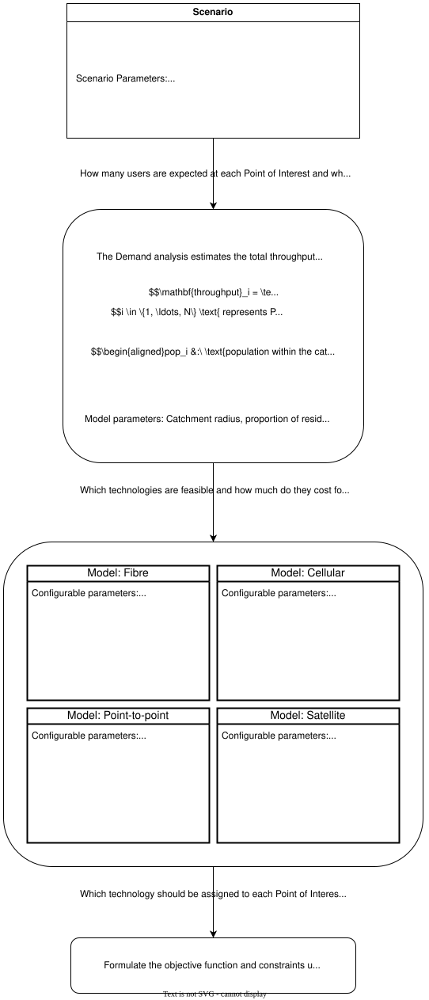

Scenarios
The tool provides built-in connectivity scenarios to guide the analysis. Each scenario corresponds to a specific objective for connectivity planners or policymakers. For example, minimising deployment costs, maximising the number of users reached, or maximising operator revenues.
The choice of scenario determines which technology is assigned to connect each POI, and therefore drives the cost and revenue outputs of the model. Scenarios can be configured with or without a budget constraint: without a budget, all POIs are connected; with a budget, the model must prioritise which POIs to connect given the available funds. Users should select the scenario that best matches their objectives.
Overall approach
Each scenario involves solving a technology assignment problem: determining which technology should be assigned to each Point of Interest (POI). This problem is formulated as a linear optimization model, in which an objective function is maximised subject to a set of constraints.
While the specific objectives and constraints vary between scenarios, the overall optimization process follows the same sequence of steps, as illustrated in the flowchart below.
Figure: Solving a technology assignment problem

1. Estimate demand. The required throughput at each POI is estimated by the demand model (see the Models section). Demand informs the assignment in two ways: it influences which technology is best suited to a POI, since technologies differ in the throughput they can deliver, and higher throughput drives higher costs, which are a key factor in certain scenarios.
2. Assess technology feasibility. Not every technology can serve every POI. Each technology is evaluated against the conditions required for it to be viable at a given location. For example, cellular is only feasible if the POI falls within the coverage area of a cell site. This step determines the set of candidate technologies available for each POI.
3. Solve the optimization. Finally, the objective function and constraints are formulated and solved to find the optimal assignment, which determines the technology to be used at each POI. The objectives and constraints specific to each scenario are described in the sections that follow.
General notations
We first introduce some notation. Throughout, we use the following indices, parameters, and decision variables:
The decision variables are binary: each indicates whether a given technology is assigned to a given POI.
Each POI can be served by at most one technology. This is enforced by requiring that, for every POI , the assignment variables sum to no more than one across all technologies:
Objective function
Every scenario maximises a weighted combination of two objectives. The primary objective, , is scenario-specific (e.g. minimizing cost) and is defined in each scenario's section below. The secondary objective, , is common to all scenarios: it rewards assignments in which a POI is served by a technology capable of meeting its throughput requirement. It acts as a tie-breaker, nudging the solution toward better capacity satisfaction among assignments that are otherwise comparable under the primary objective.
The capacity objective counts the POIs whose assigned technology can meet their demand. For each POI and technology , let indicate whether that technology's maximum throughput is sufficient:
where is the required throughput at POI . The capacity objective is then the number of POIs assigned a technology that satisfies their demand:
Rescaling and combining the objectives
The two objectives are measured in different units (e.g. US dollars for cost, a count of POIs for capacity), so they cannot be combined directly. Each is first rescaled to a common range using min–max normalization. The minimum and maximum attainable values of each objective are found by solving the optimization once for each objective in isolation, subject to the same constraints:
The two rescaled objectives are then combined into a single weighted objective, which is what the model maximises:
The weights and were chosen based on desk research and sensitivity analysis. The larger weight on the primary objective ensures it drives the assignment, while the capacity term serves only to break ties between solutions of comparable primary value.
Additional constraints for fibre paths
Fibre connections form a physical network, and each individual fibre segment is subject to a maximum connection distance (see max_connection_distance). This is what creates dependencies between POIs. Consider a POI that is too far from the nearest fibre node to be connected directly, but is within range of a closer POI . POI can still be reached by routing fibre to first and then extending a short segment from to , each segment individually respecting the distance limit, even though the direct distance from the fibre node to does not. In this arrangement acts as a relay: can be assigned fibre only if is also assigned fibre, since without there is no in-range path to .
This dependency is enforced with a linking constraint. For each such pair, where depends on relay :
The inequality captures the required logic: if is not assigned fibre (), then is forced to 0, so cannot take fibre either. If is assigned fibre (), the constraint becomes , which is non-binding: is then free to take fibre or not.
Scenario 1: Maximise Operator Net Present Value (NPV)
Scenario parameters
These are the scenario parameters:
| Description | Example value |
|---|---|
| Budget (USD) | (none by default; optional) |
| Project planning period (years) | 10 |
| Demand per user (Mbps) | 5 |
Purpose
This scenario takes the perspective of a commercial operator or investor. The goal is to identify the technology assignment that is most financially attractive over the project period — connecting POIs in the way that maximises the net financial return, or, when spending is capped, that generates the most revenue for the available budget.
Primary objective
The objective is built from the present value of the revenues and costs generated by the technology assignment. Both are computed over the full project planning period (see Scenario parameters) and discounted to reflect the time value of money.
Discounting uses the present value interest factor of an annuity (PVIFA), which converts a constant amount received or paid each year over the -year planning period into its equivalent value today, at discount rate :
The present values of revenues and costs follow by applying the PVIFA to the annual revenues and annual costs implied by the assignment:
where is the annual revenue and the annual cost of serving POI with technology (both derived in the cost-function sections in Models).
The form of the primary objective depends on whether the scenario is run with a budget:
Without a budget, the objective is net present value — revenues less costs — so the model seeks the most profitable assignment:
With a budget, costs are instead handled as a constraint (see below), and the objective is simply to maximise the present value of revenues:
Constraints
In addition to the shared constraints (at most one technology per POI, and the fibre relay dependencies) this scenario applies one of the following, depending on the budget setting:
Without a budget, every POI must be connected. The model is required to assign a technology to each POI, and the optimization determines only which one:
With a budget, POIs need not all be connected; instead, total spending may not exceed the budget specified in the Scenario parameters:
Under a budget, the model maximises revenue while respecting this cap, which means it may leave some POIs unconnected when connecting them would not be affordable.
Scenario 2: Minimise operator total cost of ownership (TCO)
Scenario parameters
These are the scenario parameters:
| Description | Example value |
|---|---|
| Project planning period (years) | 10 |
| Demand per user (Mbps) | 5 |
Purpose
This scenario takes the perspective of an operator or funder whose aim is to connect every POI as cheaply as possible.
Unlike the profitability scenario, this scenario does not accept a budget. The objective is to minimise cost while connecting all POIs, so the connect-all requirement is essential: without it, the cheapest possible solution would be to connect nothing at all, since any connection adds cost.
Primary objective
This scenario is a special case of the profitability objective in which revenues are set to zero, leaving only the present value of costs. The model minimises this quantity.
As before, costs are computed over the project planning period (see Scenario parameters) and discounted to present value using the PVIFA at discount rate :
where is the annual cost of serving POI with technology . The primary objective is to minimise this present value of costs:
Equivalently, this is the net present value objective of Scenario 1 with revenues fixed at zero.
Constraints
In addition to the shared constraints (at most one technology per POI, and the fibre relay dependencies) this scenario always requires that every POI be connected:
This constraint is what prevents the trivial empty solution and forces the model to find the least-cost assignment that serves all POIs.
Scenario 3: Maximise number of connected users
Scenario parameters
| Description | Example value |
|---|---|
| Budget (USD) | 1,000,000 |
| Project planning period (years) | 10 |
| Demand per user (Mbps) | 5 |
Purpose
This scenario takes the perspective of a policymaker working under a fixed budget that is not sufficient to connect every POI. Rather than optimising for financial return, the goal is to maximise social impact: connecting the set of POIs that reaches the largest number of people for the money available.
A budget is required for this scenario to be meaningful. The objective is to reach as many people as possible, so without a spending limit the optimal solution would simply be to connect every POI: there would be no trade-off to resolve. The budget is what creates the scarcity that the scenario is designed to address: when funds are insufficient to connect everything, the model must decide which POIs to prioritise, and it does so by favouring those that serve the most people per unit of budget.
Primary objective
The objective is to maximise the total number of people reached across all connected POIs. Each POI carries an estimated user count from the demand model (see the Models section) which is by default the number of people within 1km. The objective sums these counts over the POIs the model chooses to connect:
where is the estimated number of users at POI , and indicates whether POI is connected () or not ().
Constraints
In addition to the shared constraints (at most one technology per POI, and the fibre relay dependencies) this scenario applies a mandatory budget constraint: total spending may not exceed the budget specified in the scenario parameters above:
where is the annual cost of serving POI with technology (derived in the cost-function sections above), and is the project planning period.
The optimisation resolves which POIs to connect so as to reach the greatest population within the budget.
Scenario 4: Maximise number of connected POIs
Scenario parameters
| Description | Example value |
|---|---|
| Budget (USD) | 1,000,000 |
| Project planning period (years) | 10 |
| Demand per user (Mbps) | 5 |
Purpose
This scenario is closely related to Scenario 3, and again takes the perspective of a policymaker working under a fixed budget that cannot connect every POI. The difference lies in what is being maximised: rather than reaching the largest population, the goal here is to connect the largest number of POIs. Each connected POI counts equally, regardless of how many people it serves.
As in Scenario 3, a budget is required for the scenario to be meaningful. Without a spending limit, the optimal solution would simply be to connect every POI, leaving no trade-off to resolve.
Primary objective
The objective is to maximise the total number of connected POIs:
where indicates whether POI is connected () or not (). This differs from Scenario 3 only in that each POI contributes a weight of 1, rather than its estimated user count — so the model maximises the count of connected POIs rather than the population reached.
Constraints
In addition to the shared constraints (at most one technology per POI, and the fibre relay dependencies) this scenario applies a mandatory budget constraint: total spending may not exceed the budget specified in the scenario parameters above:
where is the annual cost of serving POI with technology (derived in the cost-function sections above), and is the project planning period.